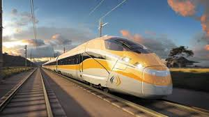

High-Speed Rail & Bullet Trains
Era: 1960s – Present
Japan's Shinkansen, the original bullet train, launched in 1964 for the Tokyo Olympics and reached speeds of 210 km/h, astonishing for its era and still impressively fast today. Modern high-speed rail systems, particularly in Japan, France, and China, now regularly exceed 300 km/h, and China alone has built the largest high-speed rail network in the world in just around two decades, fundamentally reshaping how people and goods move across the country.
Type: Advanced Rail Transportation